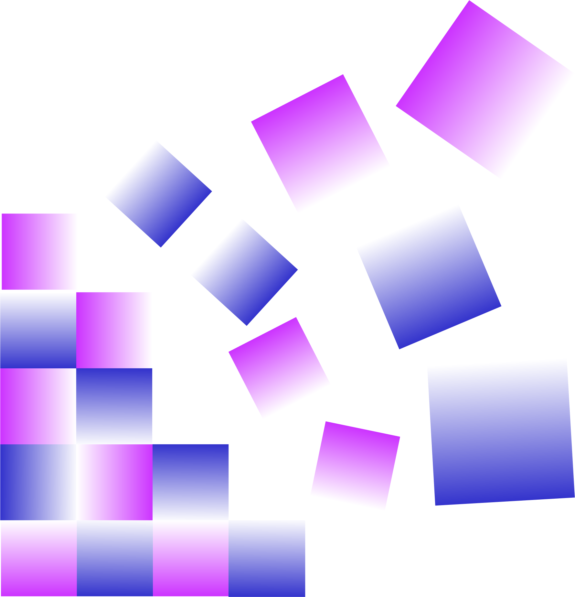
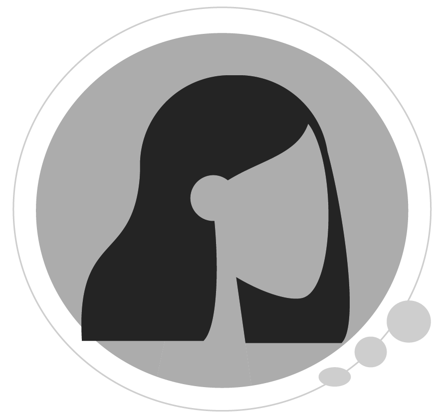
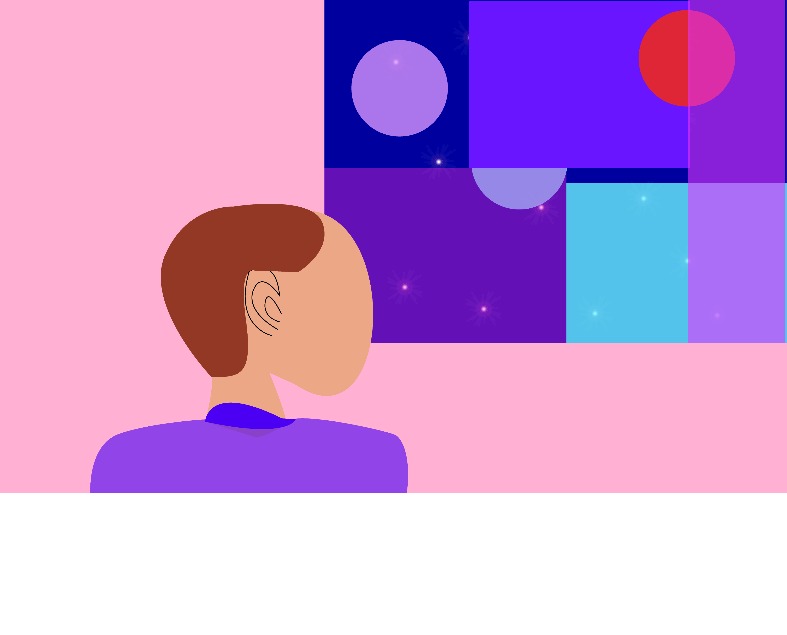
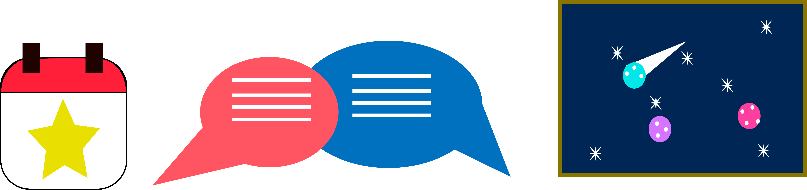

Bienvenidos a KALIA
KALIA es más que un museo ficticio: es una experiencia. Una institución imaginaria nacida desde la libertad creativa y el deseo de romper con los límites tradicionales del arte y su exhibición. Concebido como un espacio conceptual, KALIA ofrece una narrativa museográfica donde el visitante no es un espectador pasivo, sino un participante activo en la construcción del significado artístico.
Inspirado en los principios del arte abstracto, inmersivo y contemporáneo, este museo propone un recorrido sensorial a través de espacios digitales que no imitan la realidad, sino que la reinterpretan. Aquí, la obra no se limita a un soporte: flota, pulsa, vibra. KALIA transforma lo intangible en presencia, y lo invisible en experiencia estética. Sean bienvenidos a este caleidoscopio artístico donde cada forma habla, cada color guía, y cada silencio resuena.

Fragmentos visuales que dialogan entre el caos y el orden, invitando a interpretar.

Explora formas en suspensión que redefinen el espacio físico y emocional del arte.
Fragmentos visuales que dialogan entre el caos y el orden, invitando a interpretar.
Exposiciones Virtuales
Nuestras galerías virtuales están diseñadas como instalaciones artísticas interactivas. Cada una explora un concepto visual a través de formas geométricas, luz, espacio y movimiento.
Accede a nuestras salas virtuales:
Las siguientes exposiciones representan una extensión de la propuesta de KALIA: abrir caminos hacia el arte que no solo se observa, sino que se vive. Cada galería es una experiencia sensorial única.

Instalaciones desarrolladas para invitar a una reflexión profunda desde lo sensorial.
Eventos
KALIA organiza una serie de actividades orientadas a la exploración artística, la interacción digital y el pensamiento contemporáneo. Estas experiencias buscan ampliar los límites del arte y conectar con públicos diversos.
Entre nuestros eventos destacan: Diálogo Abstracto, conversaciones con artistas sobre arte inmersivo; Residencia Virtual, colaboraciones con creadores digitales; y Noche K, una instalación audiovisual en tiempo real. Todos ellos fortalecen el vínculo entre arte, tecnología y emoción.

Eventos digitales que hacen del arte un punto de encuentro en constante evolución.
Sobre KALIA
Fundado como un espacio para la exploración artística contemporánea, KALIA —Kaleidoscopio de Arte Libre, Inmersivo y Abstracto— se posiciona como un museo dedicado a las prácticas artísticas experimentales que desbordan los límites tradicionales de la exhibición.
Desde su concepción, KALIA ha sido un punto de encuentro para artistas, curadores y espectadores interesados en lenguajes visuales no convencionales. Su vocación principal es ofrecer experiencias estéticas que estimulen la percepción sensorial y la interpretación subjetiva.
Comprometido con la innovación, la accesibilidad y el diálogo interdisciplinario, KALIA reafirma su papel como una institución cultural relevante en el panorama artístico contemporáneo, ofreciendo al público un museo donde la forma se transforma, y la experiencia es arte en sí misma.
Un museo comprometido con la transformación visual, sensorial y conceptual del arte.